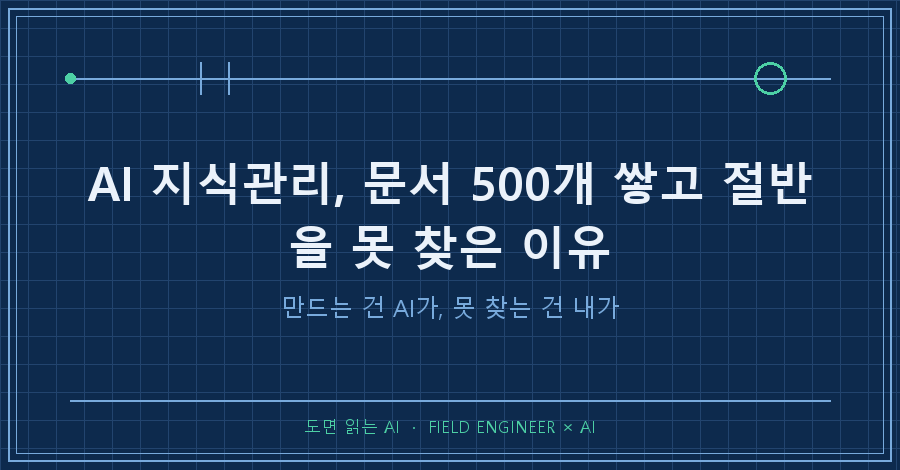
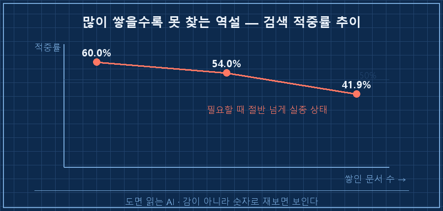
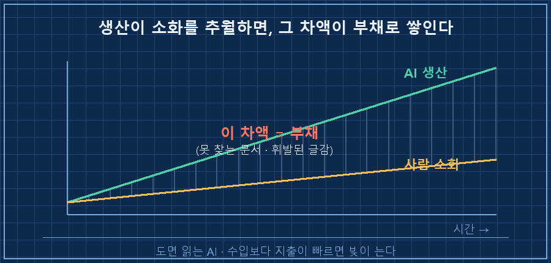
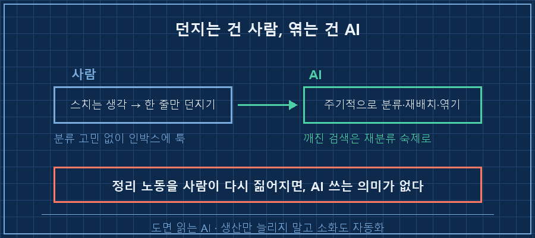

AI로 자료 만들기는 빨라졌는데, 정작 필요할 때 그 자료를 못 찾은 적 없으세요?
결론부터 말씀드릴게요.
AI 지식관리의 진짜 병목은 '만들기'가 아니라 '꺼내기'였어요.
저는 1년간 AI로 지식 문서를 500개 넘게 쌓았는데, 어느 날 검색 적중률을 재보니 41.9%더라고요.
절반 넘게, 필요할 때 못 꺼내고 있었던 거예요.
저는 수소 설비 제어가 본업인 15년차 엔지니어입니다.
판넬 설계하고 PLC 짜는 사람인데, 지난 1년은 좀 특이했어요.
일하면서 나온 자료를 하나도 안 버리고 전부 AI한테 먹여 지식 문서로 쌓았거든요.
차단기 선정 근거, 배터리 사양, 법규 원문 같은 것들을요.
그렇게 쌓인 게 500개, 20만 줄이 넘습니다.
1. 문서를 만든 건 AI였고, 못 찾은 건 저였어요
AI랑 일하면 생산이 정말 빨라요.
설비 하나 분석하면 결과를 문서로 박아두고,
규격 찾아보면 참조표로 만들어두고,
실수하면 재발 방지 규칙으로 남기고..
예전 같았으면 이런 걸 정리할 시간이 어디 있었겠어요.
매번 머릿속 기억이랑 옛날 도면에 의존했죠.
근데 AI가 있으니 분석 끝나는 김에 문서까지 그냥 나와요.
여기까지는 딱 성공담이죠.
근데 어느 날 배터리 사양이 궁금해서 '리튬 충전'으로 제 지식 베이스를 검색했는데,
1등으로 나온 게 엉뚱하게도 수소 저장·충전 설계 문서더라고요.
같은 '충전'이라는 단어 때문에 완전히 다른 게 걸린 거예요.
2. 적중률을 실제로 재봤더니 41.9%였어요
설마 싶어서 검색 적중률을 수치로 재봤습니다.
결과가 이랬어요.
[내 지식베이스 검색 적중률 추이]
1차 측정 : 60.0%
2차 측정 : 54.0%
3차 측정 : 41.9% ← 문서를 더 쌓을수록 더 떨어짐문서를 더 부지런히 쌓을수록 오히려 적중률이 떨어졌어요.
500개 중 절반 넘게, 필요할 때 못 꺼내는 상태였던 거죠.
문서 하나하나는 멀쩡해요. 열어보면 품질도 좋고요.
근데 존재를 못 찾으면 그건 없는 거나 마찬가지예요.
원인은 의외로 단순했어요.
자재 정보, 분석 결과, 규격, 규칙이 아무 축 없이 한 폴더에 평면으로 뒤섞여 있었거든요.
[문제였던 구조 — 축 없는 평면 폴더]
knowledge/
├─ 배터리_충전사양.md
├─ 수소저장_충전설계.md ← '충전'만 겹쳐도 검색이 헷갈림
├─ 차단기_선정근거.md
├─ 법규_원문_인용.md
└─ ... (500개가 한 층에 평면으로)쌓는 데만 정신이 팔려서, 꺼내는 구조를 아예 안 만든 거였어요.

3. 병명을 붙이면, 생산이 소화를 추월한 거예요
글감도 똑같았어요.
AI랑 나눈 대화 기록이 200메가 넘게 쌓여 있는데,
그 안에 괜찮은 생각들이 분명히 지나갔거든요.
근데 나중에 실제로 글로 캐낸 건 고작 3건입니다.
기록할까 말까 고민하다 안 적고,
안 적은 건 현장 한 번 다녀오면 그대로 휘발되고..
200메가 쌓는 건 AI 덕에 노력이 안 드는데, 거기서 건지는 건 여전히 제 손이 필요했던 거예요.
그래서 이 상태에 이름을 붙여봤어요.
AI 생산속도가 사람 소화속도를 추월하면, 그 차액이 부채로 쌓입니다.
수입보다 지출이 빠르면 빚이 늘어나는 거랑 똑같은 구조예요.
검색 깨진 문서 500개, 휘발된 글감 200메가, 전부 같은 병의 증상이고요.

| 구분 | AI 쓰기 전 | AI 쓴 뒤 |
|---|---|---|
| 병목 | 만드는 것 (느림) | 소화하는 것 (못 따라감) |
| 문서 생산 | 손으로 겨우 | 분석 끝나면 자동으로 |
| 꺼내 쓰기 | 양이 적어 다 앎 | 500개 중 41.9%만 |
| 결과 | 만드는 족족 소화 | 차액이 부채로 축적 |
AI 전에는 만드는 게 병목이라, 만드는 족족 소화가 됐거든요.
근데 AI가 그 병목을 없애버리니까, 이제 소화가 새 병목이 된 거예요.
4. 답은 덜 만드는 게 아니라, 소화도 AI한테 맡기는 거였어요
처음엔 좀 덜 만들까 싶었어요.
근데 그건 무기를 버리는 거잖아요.
답은 반대였어요. 던지는 건 사람, 엮는 건 AI.
지금 제가 하는 건 두 가지예요.
하나, 인사이트가 스치면 분류 고민 없이 인박스 파일에 한 줄만 던져요.
정리하고 엮는 건 AI가 주기적으로 하고요.
지금 읽고 계신 이 글도, 그렇게 던져둔 한 줄에서 나왔습니다.
둘, 깨진 검색은 제가 폴더를 다시 파는 게 아니라 AI한테 재분류 숙제로 냈어요.
자재·분석·규격·규칙을 축으로 나눠서 다시 꽂는 일을요.

솔직히 아직 다 해결된 건 아니에요.
적중률은 여전히 절반 아래고, 재분류도 진행 중이에요.
그래도 방향은 확실해요.
사람이 정리 노동을 다시 통째로 짊어지는 순간, AI를 쓰는 의미가 없어지거든요.
자주 묻는 질문
Q. 그냥 노션이나 옵시디언 같은 도구로 정리하면 되는 거 아닌가요?
도구는 그릇이라 담는 걸 도와주지, 꺼내는 걸 대신 해주진 않아요.
제 문제도 폴더가 없어서가 아니라 '분류 기준(축)'이 없어서였어요.
축을 세워 다시 꽂는 반복 노동, 그걸 AI한테 넘기는 게 핵심이더라고요.
Q. 지식 문서를 아예 적게 만들면 이 병에 안 걸리지 않나요?
그건 AI를 쓰는 이유를 버리는 거예요.
생산을 줄이는 게 아니라, 늘어난 생산을 감당할 소화 라인을 같이 자동화하는 게 맞아요.
안 걸리는 게 목표가 아니라, 걸린 걸 빨리 알아채고 소화를 자동화하는 거요.
정리하면요
AI를 제대로 쓰기 시작하면 생산이 소화를 추월하고, 그 차액은 반드시 부채로 쌓여요.
이건 저만 걸린 병이 아니라, AI를 진짜 업무에 굴리기 시작한 분들이라면 곧 겪을 병이에요.
걸리는 게 문제가 아니라, 모르고 계속 쌓기만 하는 게 문제고요.
- ☐ 만든 자료의 검색 적중률을 재본 적 있는가 (감이 아니라 숫자로)
- ☐ 문서가 축 없이 한 폴더에 평면으로 쌓여 있지 않은가
- ☐ 정리·재분류를 사람이 다시 손으로 하고 있진 않은가 → AI 숙제로 넘기기
혹시 여러분도 AI가 만들어준 결과물, 나중에 다시 찾아 써본 적 있으세요?
저처럼 '분명 만들어뒀는데 어디 갔지' 하셨다면, 그게 바로 이 부채의 신호예요.
이 재분류가 어디까지 갔는지, 적중률이 얼마나 올라왔는지는 makefield.ai 에 계속 기록하는 중입니다.
---
태그: #AI지식관리 #AI자료정리 #AI지식베이스 #AI문서관리 #AI세컨브레인 #지식관리방법 #AI검색 #RAG #노션정리 #옵시디언 #AI업무자동화 #제조업AI #현장엔지니어 #AI실무 #도면읽는AI